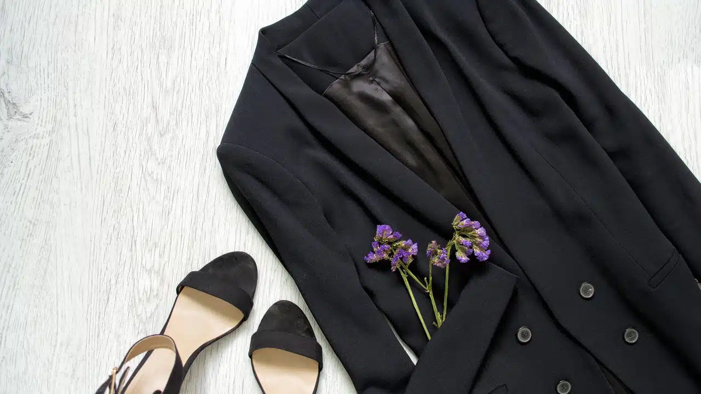

Tendências de moda feminina para o Verão de 2025

Com a mudança das estações, o mundo da moda aguarda novidades e inovações. O verão de 2025 se aproxima com promessas de estilos frescos e sofisticados para a moda feminina. As coleções para esta temporada não apenas celebram a individualidade, mas também ecoam um retorno à sustentabilidade e simplicidade. Descubra as principais tendências que prometem dominar as ruas e passarelas neste ano.
As cores vibrantes e os cortes ousados são elementos centrais na moda feminina deste verão. Designers renomados estão experimentando paletas de tons arrojados, mesclando o tradicional com o moderno para criar peças que são verdadeiras declarações de estilo. Além disso, espera-se uma influência crescente de tecidos ecológicos e práticas éticas, tornando a moda não apenas sobre aparência, mas também sobre valores e consciência ambiental.
Quais são as cores que definem o Verão de 2025?
No verão de 2025, a paleta de cores vibrantes ganha destaque. As tonalidades intensas, como laranja solar, azul celeste e verde esmeralda estão entre as favoritas. Essas cores não apenas capturam a estética do verão, como também evocam sentimentos de otimismo e frescor.
Dentro dessa gama de cores, o neon também retorna em grande estilo. Desde roupas casuais a acessórios sofisticados, essas cores luminosas prometem capturar atenção e criar looks memoráveis. A moda continua a se inspirar na natureza, trazendo nuances que remetem ao mar, floresta e deserto, destacando a beleza do mundo ao nosso redor.
Tendências em tecidos e cortes para 2025
Os tecidos leves e respiráveis têm seu momento de destaque no verão de 2025. Materiais como algodão orgânico, linho e o inovador Tencel estarão em voga, promovendo conforto e sustentabilidade. Este foco na moda ecológica reflete uma tendência crescente de consumidores mais conscientes, que acompanham atentamente as práticas de produção das marcas.
Os cortes que dominam a temporada incluem estilos fluídos e silhuetas desconstruídas. Vestidos longos e mangas amplas são acompanhados de detalhes modernistas, como assimetrias e fendas estratégicas. Peças oversized proporcionam conforto sem sacrificar o estilo, enquanto o ajuste perfeito garante elegância e sofisticação.
Quais acessórios serão destaque no Verão de 2025?
Os acessórios assumem um papel crucial na moda feminina do verão de 2025. Bolsas de tamanho grande, conhecidas como “maxi bags”, estão em alta, proporcionando praticidade e estilo. Além disso, acessórios geométricos e peças feitas à mão prometem enriquecer looks com um toque único e personalizado.
Os sapatos seguem uma linha semelhante de criatividade, com sandálias que vão do minimalismo sofisticado a designs artísticos e inovadores. Pés adornados com pedrarias e cores metálicas chamam a atenção, enquanto plataformas e solados tratorados garantem conforto ao longo do dia.
(outras materias)